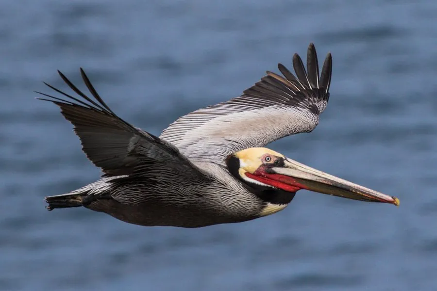

鸟类 · 动物界
褐鹈鹕 Pelecanus occidentalis

北美洲沿海的鹈鹕，身体褐色、头部淡黄，捕鱼时从空中俯冲入水，因 DDT 污染曾濒危，后恢复，是保育成功的象征。
- 分类
- 门脊索动物门纲鸟纲目鹈形目科鹈鹕科属鹈鹕属
- 栖息环境
- 沿海、海湾、河口与岛屿，繁殖期在岛上地面或树上营巢
- 地理分布
- 北美洲、中美洲和南美洲沿海，中国无分布
- 保护级别
- IUCN 无危（LC）；非中国分布物种
物种志
褐鹈鹕体长 100–152 cm，体重 3.5–9 kg。它的体羽以褐色为主，头部和颈部呈淡黄色，喙长而扁平，喉囊呈暗红色至黑色，繁殖期头部颜色更鲜艳。它是鹈鹕中唯一会从空中俯冲入水捕鱼的种类，入水时激起大片水花。
褐鹈鹕分布于北美洲、中美洲和南美洲的沿海和海湾，从美国东西海岸到加勒比海都有。它们以鱼为主食，捕鱼时从高空俯冲入水，用喉囊兜住鱼和水，再滤出水吞下鱼。20 世纪中叶，DDT 污染导致卵壳变薄，褐鹈鹕在美国一度濒临灭绝；禁用 DDT 并加以保护后，种群逐渐恢复，成为保育成功的象征。繁殖期在岛屿地面或树上营巢，每窝产卵 2–3 枚，孵化 28–30 天。
形态与习性
- 食性鱼类为主
- 体长100–152 cm
- 体重3.5–9 kg
- 繁殖每窝 2–3 枚卵，孵化 28–30 天
- 捕鱼从高空俯冲入水，用喉囊兜住鱼
- 寿命野外约 20–30 年
趣味知识
- 褐鹈鹕是鹈鹕中唯一会从空中俯冲入水捕鱼的种类。
- DDT 污染曾让它在美国濒临灭绝，禁用后种群恢复，成为保育成功案例。
- 它入水时激起大片水花，再用喉囊兜住鱼和水，滤水后吞下鱼。